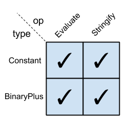
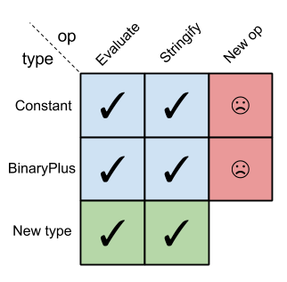
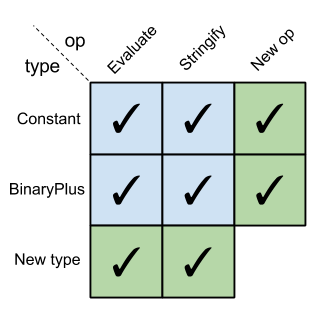

The craft of programming is almost universally concerned with different types of data and operations/algorithms that act on this data [1]. Therefore, it's hardly surprising that designing abstractions for data types and operations has been on the mind of software engineers and programming-language designers since... forever.
Yet I've only recently encountered a name for a software design problem which I ran into multiple times in my career. It's a problem so fundamental that I was quite surprised that I haven't seen it named before. Here is a quick problem statement.
Imagine that we have a set of data types and a set of operations that act on these types. Sometimes we need to add more operations and make sure they work properly on all types; sometimes we need to add more types and make sure all operations work properly on them. Sometimes, however, we need to add both - and herein lies the problem. Most of the mainstream programming languages don't provide good tools to add both new types and new operations to an existing system without having to change existing code. This is called the "expression problem". Studying the problem and its possible solutions gives great insight into the fundamental differences between object-oriented and functional programming and well as concepts like interfaces and multiple dispatch.
A motivating example
As is my wont, my example comes from the world of compilers and interpreters. To my defense, this is also the example used in some of the seminal historic sources on the expression problem, as the historical perspective section below details.
Imagine we're designing a simple expression evaluator. Following the standard interpreter design pattern, we have a tree structure consisting of expressions, with some operations we can do on such trees. In C++ we'd have an interface every node in the expression tree would have to implement:
class Expr {
public:
virtual std::string ToString() const = 0;
virtual double Eval() const = 0;
};
This interface shows that we currently have two operations we can do on expression trees - evaluate them and query for their string representations. A typical leaf node expression:
class Constant : public Expr {
public:
Constant(double value) : value_(value) {}
std::string ToString() const {
std::ostringstream ss;
ss << value_;
return ss.str();
}
double Eval() const {
return value_;
}
private:
double value_;
};
And a typical composite expression:
class BinaryPlus : public Expr {
public:
BinaryPlus(const Expr& lhs, const Expr& rhs) : lhs_(lhs), rhs_(rhs) {}
std::string ToString() const {
return lhs_.ToString() + " + " + rhs_.ToString();
}
double Eval() const {
return lhs_.Eval() + rhs_.Eval();
}
private:
const Expr& lhs_;
const Expr& rhs_;
};
Until now, it's all fairly basic stuff. How extensible is this design? Let's see... if we want to add new expression types ("variable reference", "function call" etc.), that's pretty easy. We just define additional classes inheriting from Expr and implement the Expr interface (ToString and Eval).
However, what happens if we want to add new operations that can be applied to expression trees? Right now we have Eval and ToString, but we may want additional operations like "type check" or "serialize" or "compile to machine code" or whatever.
It turns out that adding new operations isn't as easy as adding new types. We'd have to change the Expr interface, and consequently change every existing expression type to support the new method(s). If we don't control the original code or it's hard to change it for other reasons, we're in trouble.
In other words, we'd have to violate the venerable open-closed principle, one of the main principles of object-oriented design, defined as:
software entities (classes, modules, functions, etc.) should be open for extension, but closed for modification
The problem we're hitting here is called the expression problem, and the example above shows how it applies to object-oriented programming.
Interestingly, the expression problem bites functional programming languages as well. Let's see how.
The expression problem in functional programming
Update 2018-02-05: a new post discusses the problem and its solutions in Haskell in more depth.
Object-oriented approaches tend to collect functionality in objects (types). Functional languages cut the cake from a different angle, usually preferring types as thin data containers, collecting most functionality in functions (operations) that act upon them. Functional languages don't escape the expression problem - it just manifests there in a different way.
To demonstrate this, let's see how the expression evaluator / stringifier looks in Haskell. Haskell is a good poster child for functional programming since its pattern matching on types makes such code especially succinct:
module Expressions where
data Expr = Constant Double
| BinaryPlus Expr Expr
stringify :: Expr -> String
stringify (Constant c) = show c
stringify (BinaryPlus lhs rhs) = stringify lhs
++ " + "
++ stringify rhs
evaluate :: Expr -> Double
evaluate (Constant c) = c
evaluate (BinaryPlus lhs rhs) = evaluate lhs + evaluate rhs
Now let's say we want to add a new operation - type checking. We simply have to add a new function typecheck and define how it behaves for all known kinds of expressions. No need to modify existing code.
On the other hand, if we want to add a new type (like "function call"), we get into trouble. We now have to modify all existing functions to handle this new type. So we hit exactly the same problem, albeit from a different angle.
The expression problem matrix
A visual representation of the expression problem can be helpful to appreciate how it applies to OOP and FP in different ways, and how a potential solution would look.
The following 2-D table (a "matrix") has types in its rows and operations in its columns. A matrix cell row, col is checked when the operation col is implemented for type row:
In object-oriented languages, it's easy to add new types but difficult to add new operations:
Whereas in functional languages, it's easy to add new operations but difficult to add new types:

A historical perspective
The expression problem isn't new, and has likely been with us since the early days; it pops its head as soon as programs reach some not-too-high level of complexity.
It's fairly certain that the name expression problem comes from an email sent by Philip Wadler to a mailing list deailing with adding generics to Java (this was back in the 1990s).
In that email, Wadler points to the paper "Synthesizing Object-Oriented and Functional Design to Promote Re-Use" by Krishnamurthi, Felleisen and Friedman as an earlier work describing the problem and proposed solutions. This is a great paper and I highly recommend reading it. Krishnamurthi et.al., in their references, point to papers from as early as 1975 describing variations of the problem in Algol.
Flipping the matrix with the visitor pattern
So far the article has focused on the expression problem, and I hope it's clear by now. However, the title also has the word solution in it, so let's turn to that.
It's possible to kinda solve (read on to understand why I say "kinda") the expression problem in object-oriented languages; first, we have to look at how we can flip the problem on its side using the visitor pattern. The visitor pattern is very common for this kind of problems, and for a good reason. It lets us reformulate our code in a way that makes it easier to change in some dimensions (though harder in others).
For the C++ sample shown above, rewriting it using the visitor pattern means adding a new "visitor" interface:
class ExprVisitor {
public:
virtual void VisitConstant(const Constant& c) = 0;
virtual void VisitBinaryPlus(const BinaryPlus& bp) = 0;
};
And changing the Expr interface to be:
class Expr {
public:
virtual void Accept(ExprVisitor* visitor) const = 0;
};
Now expression types defer the actual computation to the visitor, as follows:
class Constant : public Expr {
public:
Constant(double value) : value_(value) {}
void Accept(ExprVisitor* visitor) const {
visitor->VisitConstant(*this);
}
double GetValue() const {
return value_;
}
private:
double value_;
};
// ... similarly, BinaryPlus would have
//
// void Accept(ExprVisitor* visitor) const {
// visitor->VisitBinaryPlus(*this);
// }
//
// ... etc.
A sample visitor for evaluation would be [2]:
class Evaluator : public ExprVisitor {
public:
double GetValueForExpr(const Expr& e) {
return value_map_[&e];
}
void VisitConstant(const Constant& c) {
value_map_[&c] = c.GetValue();
}
void VisitBinaryPlus(const BinaryPlus& bp) {
bp.GetLhs().Accept(this);
bp.GetRhs().Accept(this);
value_map_[&bp] = value_map_[&(bp.GetLhs())] + value_map_[&(bp.GetRhs())];
}
private:
std::map<const Expr*, double> value_map_;
};
It should be obvious that for a given set of data types, adding new visitors is easy and doesn't require modifying any other code. On the other hand, adding new types is problematic since it means we have to update the ExprVisitor interface with a new abstract method, and consequently update all the visitors to implement it.
So it seems that we've just turned the expression problem on its side: we're using an OOP language, but now it's hard to add types and easy to add ops, just like in the functional approach. I find it extremely interesting that we can do this. In my eyes this highlights the power of different abstractions and paradigms, and how they enable us to rethink a problem in a completely different light.
So we haven't solved anything yet; we've just changed the nature of the problem we're facing. Worry not - this is just a stepping stone to an actual solution.
Extending the visitor pattern
The following is code excerpts from a C++ solution that follows the extended visitor pattern proposed by Krishnamurthi et. al. in their paper; I strongly suggest reading the paper (particularly section 3) if you want to understand this code on a deep level. A complete code sample in C++ that compiles and runs is available here.
Adding new visitors (ops) with the visitor pattern is easy. Our challenge is to add a new type without upheaving too much existing code. Let's see how it's done.
One small design change that we should make to the original visitor pattern is use virtual inheritance for Evaluator, for reasons that will soon become obvious:
class Evaluator : virtual public ExprVisitor {
// .. the rest is the same
};
Now we're going to add a new type - FunctionCall:
// This is the new ("extended") expression we're adding.
class FunctionCall : public Expr {
public:
FunctionCall(const std::string& name, const Expr& argument)
: name_(name), argument_(argument) {}
void Accept(ExprVisitor* visitor) const {
ExprVisitorWithFunctionCall* v =
dynamic_cast<ExprVisitorWithFunctionCall*>(visitor);
if (v == nullptr) {
std::cerr << "Fatal: visitor is not ExprVisitorWithFunctionCall\n";
exit(1);
}
v->VisitFunctionCall(*this);
}
private:
std::string name_;
const Expr& argument_;
};
Since we don't want to modify the existing visitors, we create a new one, extending Evaluator for function calls. But first, we need to extend the ExprVisitor interface to support the new type:
class ExprVisitorWithFunctionCall : virtual public ExprVisitor {
public:
virtual void VisitFunctionCall(const FunctionCall& fc) = 0;
};
Finally, we write the new evaluator, which extends Evaluator and supports the new type:
class EvaluatorWithFunctionCall : public ExprVisitorWithFunctionCall,
public Evaluator {
public:
void VisitFunctionCall(const FunctionCall& fc) {
std::cout << "Visiting FunctionCall!!\n";
}
};
Multiple inheritance, virtual inheritance, dynamic type checking... that's pretty hard-core C++ we have to use here, but there's no choice. Unfortunately, multiple inheritance is the only way C++ lets us express the idea that a class implements some interface while at the same time deriving functionality from another class. What we want to have here is an evaluator (EvaluatorWithFunctionCall) that inherits all functionality from Evaluator, and also implements the ExprVisitorWithFunctionCall interface. In Java, we could say something like:
class EvaluatorWithFunctionCall extends Evaluator implements ExprVisitor {
// ...
}
But in C++ virtual multiple inheritance is the tool we have. The virtual part of the inheritance is essential here for the compiler to figure out that the ExprVisitor base underlying both Evaluator and ExprVisitorWithFunctionCall is the same and should only appear once in EvaluatorWithFunctionCall. Without virtual, the compiler would complain that EvaluatorWithFunctionCall doesn't implement the ExprVisitor interface.
This is a solution, alright. We kinda added a new type FunctionCall and can now visit it without changing existing code (assuming the virtual inheritance was built into the design from the start to anticipate this approach). Here I am using this "kinda" word again... it's time to explain why.
This approach has multiple flaws, in my opinion:
- Note the dynamic_cast in FunctionCall::Accept. It's fairly ugly that we're forced to mix in dynamic checks into this code, which should supposedly rely on static typing and the compiler. But it's just a sign of a larger problem.
- If we have an instance of an Evaluator, it will no longer work on the whole extended expression tree since it has no understanding of FunctionCall. It's easy to say that all new evaluators should rather be EvaluatorWithFunctionCall, but we don't always control this. What about code that was already written? What about Evaluators created in third-party or library code which we have no control of?
- The virtual inheritance is not the only provision we have to build into the design to support this pattern. Some visitors would need to create new, recursive visitors to process complex expressions. But we can't anticipate in advance which dynamic type of visitor needs to be created. Therefore, the visitor interface should also accept a "visitor factory" which extended visitors will supply. I know this sounds complicated, and I don't want to spend more time on this here - but the Krishnamurthi paper addresses this issue extensively in section 3.4
- Finally, the solution is unwieldy for realistic applications. Adding one new type looks manageable; what about adding 15 new types, gradually over time? Imagine the horrible zoo of ExprVisitor extensions and dynamic checks this would lead to.
Yeah, programming is hard. I could go on and on about the limitations of classical OOP and how they surface in this example [3]. Instead, I'll just present how the expression problem can be solved in a language that supports multiple dispatch and separates the defintion of methods from the bodies of types they act upon.
Solving the expression problem in Clojure
There are a number of ways the expression problem as displayed in this article can be solved in Clojure using the language's built-in features. Let's start with the simplest one - multi-methods.
First we'll define the types as records:
(defrecord Constant [value])
(defrecord BinaryPlus [lhs rhs])
Then, we'll define evaluate as a multimethod that dispatches upon the type of its argument, and add method implementations for Constant and BinaryPlus:
(defmulti evaluate class)
(defmethod evaluate Constant
[c] (:value c))
(defmethod evaluate BinaryPlus
[bp] (+ (evaluate (:lhs bp)) (evaluate (:rhs bp))))
Now we can already evaluate expressions:
user=> (use 'expression.multimethod)
nil
user=> (evaluate (->BinaryPlus (->Constant 1.1) (->Constant 2.2)))
3.3000000000000003
Adding a new operation is easy. Let's add stringify:
(defmulti stringify class)
(defmethod stringify Constant
[c] (str (:value c)))
(defmethod stringify BinaryPlus
[bp]
(clojure.string/join " + " [(stringify (:lhs bp))
(stringify (:rhs bp))]))
Testing it:
user=> (stringify (->BinaryPlus (->Constant 1.1) (->Constant 2.2)))
"1.1 + 2.2"
How about adding new types? Suppose we want to add FunctionCall. First, we'll define the new type. For simplicity, the func field of FunctionCall is just a Clojure function. In real code it could be some sort of function object in the language we're interpreting:
(defrecord FunctionCall [func argument])
And define how evaluate and stringify work for FunctionCall:
(defmethod evaluate FunctionCall
[fc] ((:func fc) (evaluate (:argument fc))))
(defmethod stringify FunctionCall
[fc] (str (clojure.repl/demunge (str (:func fc)))
"("
(stringify (:argument fc))
")"))
Let's take it for a spin (the full code is here):
user=> (def callexpr (->FunctionCall twice (->BinaryPlus (->Constant 1.1)
(->Constant 2.2))))
#'user/callexpr
user=> (evaluate callexpr)
6.6000000000000005
user=> (stringify callexpr)
"expression.multimethod/twice@52e29c38(1.1 + 2.2)"
It should be evident that the expression problem matrix for Clojure is:
We can add new ops without touching any existing code. We can also add new types without touching any existing code. The code we're adding is only the new code to handle the ops/types in question. The existing ops and types could come from a third-party library to which we don't have source access. We could still extend them for our new ops and types, without ever having to touch (or even see) the original source code [4].
Is multiple dispatch necessary to cleanly solve the expression problem?
I've written about multiple dispatch in Clojure before, and in the previous section we see another example of how to use the language's defmulti/defmethod constructs. But is it multiple dispatch at all? No! It's just single dispatch, really. Our ops (evaluate and stringify) dispatch on a single argument - the expression type) [5].
If we're not really using multiple dispatch, what is the secret sauce that lets us solve the expression problem so elegantly in Clojure? The answer is - open methods. Note a crucial difference between how methods are defined in C++/Java and in Clojure. In C++/Java, methods have to be part of a class and defined (or at least declared) in its body. You cannot add a method to a class without changing the class's source code.
In Clojure, you can. In fact, since data types and multimethods are orthogonal entities, this is by design. Methods simply live outside types - they are first class citizens, rather than properties of types. We don't add methods to a type, we add new methods that act upon the type. This doesn't require modifying the type's code in any way (or even having access to its code).
Some of the other popular programming languages take a middle way. In languages like Python, Ruby and JavaScript methods belong to types, but we can dynamically add, remove and replace methods in a class even after it was created. This technique is lovingly called monkey patching. While initially enticing, it can lead to big maintainability headaches in code unless we're very careful. Therefore, if I had to face the expression problem in Python I'd prefer to roll out some sort of multiple dispatch mechanism for my program rather than rely on monkey patching.
Another Clojure solution - using protocols
Clojure's multimethods are very general and powerful. So general, in fact, that their performance may not be optimal for the most common case - which is single dispatch based on the type of the sole method argument; note that this is exactly the kind of dispatch I'm using in this article. Therefore, starting with Clojure 1.2, user code gained the ability to define and use protocols - a language feature that was previously restricted only to built-in types.
Protocols leverage the host platform's (which in Clojure's case is mostly Java) ability to provide quick virtual dispatch, so using them is a very efficient way to implement runtime polymorphism. In addition, protocols retain enough of the flexibility of multimethods to elegantly solve the expression problem. Curiously, this was on the mind of Clojure's designers right from the start. The Clojure documentation page about protocols lists this as one of their capabilities:
[...] Avoid the 'expression problem' by allowing independent extension of the set of types, protocols, and implementations of protocols on types, by different parties. [...] do so without wrappers/adapters
Clojure protocols are an interesting topic, and while I'd like to spend some more time on them, this article is becoming too long as it is. So I'll leave a more thorough treatment for some later time and for now will just show how protocols can also be used to solve the expression problem we're discussing.
The type definitions remain the same:
(defrecord Constant [value])
(defrecord BinaryPlus [lhs rhs])
However, instead of defining a multimethod for each operation, we now define a protocol. A protocol can be thought of as an interface in a language like Java, C++ or Go - a type implements an interface when it defines the set of methods declared by the interface. In this respect, Clojure's protocols are more like Go's interfaces than Java's, as we don't have to say a-priori which interfaces a type implements when we define it.
Let's start with the Evaluatable protocol, that consists of a single method - evaluate:
(defprotocol Evaluatable
(evaluate [this]))
Another protocol we'll define is Stringable:
(defprotocol Stringable
(stringify [this]))
Now we can make sure our types implement these protocols:
(extend-type Constant
Evaluatable
(evaluate [this] (:value this))
Stringable
(stringify [this] (str (:value this))))
(extend-type BinaryPlus
Evaluatable
(evaluate [this] (+ (evaluate (:lhs this)) (evaluate (:rhs this))))
Stringable
(stringify [this]
(clojure.string/join " + " [(stringify (:lhs this))
(stringify (:rhs this))])))
The extend-type macro is a convenience wrapper around the more general extend - it lets us implement multiple protocols for a given type. A sibling macro named extend-protocol lets us implement the same protocol for multiple types in the same invocation [6].
It's fairly obvious that adding new data types is easy - just as we did above, we simply use extend-type for each new data type to implement our current protocols. But how do we add a new protocol and make sure all existing data types implement it? Once again, it's easy because we don't have to modify any existing code. Here's a new protocol:
(defprotocol Serializable
(serialize [this]))
And this is its implementation for the currently supported data types:
(extend-protocol Serializable
Constant
(serialize [this] [(type this) (:value this)])
BinaryPlus
(serialize [this] [(type this)
(serialize (:lhs this))
(serialize (:rhs this))]))
This time, extending a single protocol for multiple data types - extend-protocol is the more convenient macro to use.
Small interfaces are extensibility-friendly
You may have noted that the protocols (interfaces) defined in the Clojure solution are very small - consisting of a single method. Since adding methods to an existing protocol is much more problematic (I'm not aware of a way to do this in Clojure), keeping protocols small is a good idea. This guideline comes up in other contexts as well; for example, it's good practice to keep interfaces in Go very minimal.
In our C++ solution, splitting the Expr interface could also be a good idea, but it wouldn't help us with the expression problem, since we can't modify which interfaces a class implements after we've defined it; in Clojure we can.
| [1] | "Types of data" and "operations" are two terms that should be fairly obvious to modern-day programmers. Philip Wadler, in his discussion of the expression problem (see the "historical perspective" section of the article) calls them "datatypes" and "functions". A famous quote from Fred Brooks's The Mythical Man Month (1975) is "Show me your flowcharts and conceal your tables, and I shall continue to be mystified. Show me your tables, and I won’t usually need your flowcharts; they’ll be obvious." |
| [2] | Note the peculiar way in which data is passed between Visit* methods in a Expr* -> Value map kept in the visitor. This is due to our inability to make Visit* methods return different types in different visitors. For example, in Evaluator we'd want them to return double, but in Stringifier they'd probably return std::string. Unfortunately C++ won't let us easily mix templates and virtual functions, so we have to resort to either returning void* the C way or the method I'm using here. Curiously, in their paper Krishnamurthi et.al. run into the same issue in the dialect of Java they're using, and propose some language extensions to solve it. Philip Wadler uses proposed Java generics in his approach. |
| [3] | I can't resist, so just in brief: IMHO inheritance is only good for a very narrow spectrum of uses, but languages like C++ hail it as the main extension mechanism of types. But inheritance is deeply flawed for many other use cases, such as implementations of interfaces. Java is a bit better in this regard, but in the end the primacy of classes and their "closed-ness" make a lot of tasks - like the expression problem - very difficult to express in a clean way. |
| [4] | In fact, there are plenty of examples in which the Clojure implementation and the standard library provide protocols that can be extended by the user for user-defined types. Extending user-written protocols and multimethods for built-in types is trivial. As an exercise, add an evaluate implementation for java.lang.Long, so that built-in integers could participate in our expression trees without requiring wrapping in a Constant. |
| [5] | FWIW, we can formulate a multiple dispatch solution to the expression problem in Clojure. The key idea is to dispatch on two things: type and operation. Just for fun, I coded a prototype that does this which you can see here. I think the approach presented in the article - each operation being its own multimethod - is preferable, though. |
| [6] | The sharp-eyed reader will notice a cool connection to the expression problem matrix. extend-type can add a whole new row to the matrix, while extend-protocol adds a column. extend adds just a single cell. |